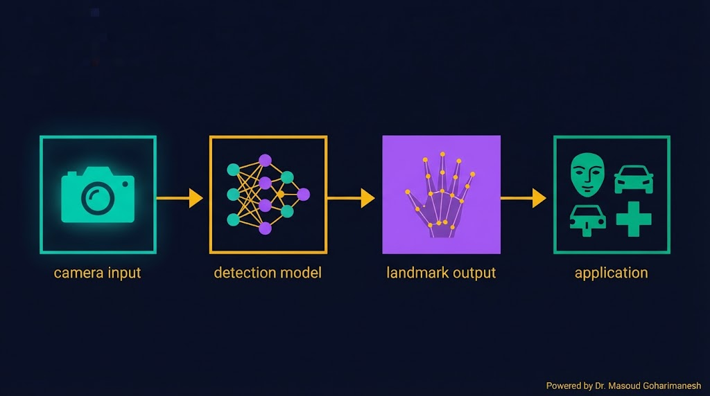
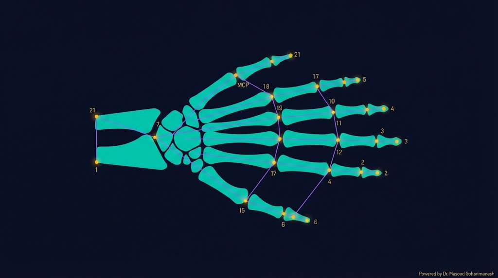
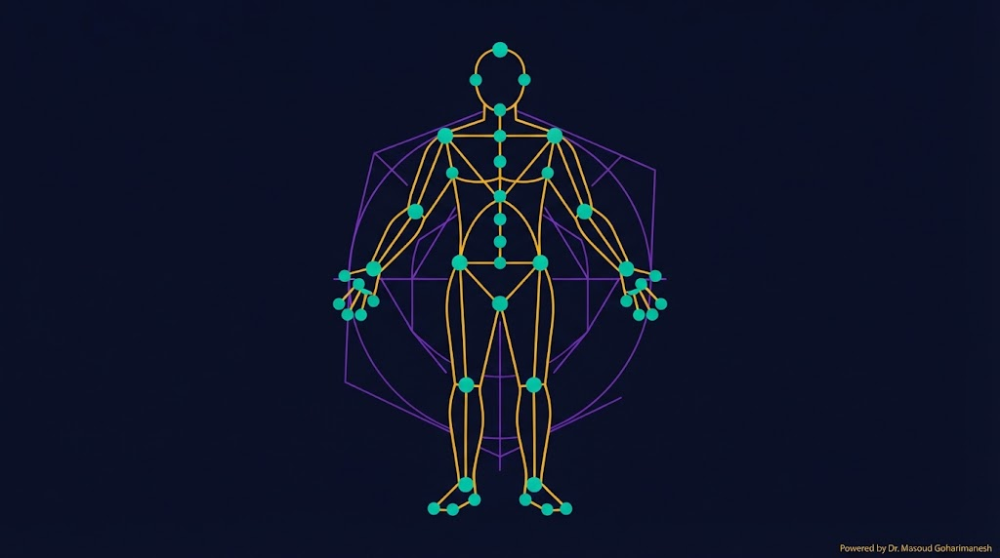
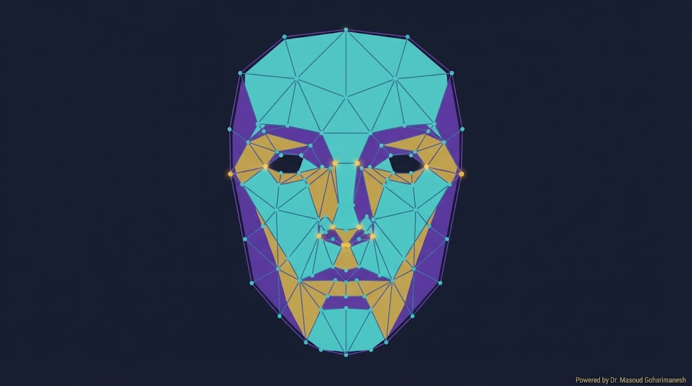
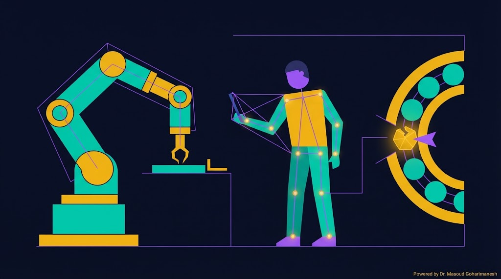

جلسه ۱۱ — MediaPipe
جلسه ۱۱ — MediaPipe
جلسه ۱۱ — MediaPipe
جلسه ۱۱ — MediaPipe
 ستاره این جلسه
به یاد شهدای والامقام
ستاره این جلسه
به یاد شهدای والامقامMediaPipe · Real-time Computer Vision
From Landmarks to Interactive Applications
CNN، Conv، Pooling، ResNet
MediaPipe، Hand Tracking، Pose
✅ MediaPipe چیست؟
✅ Hand Tracking (۲۱ نقطه)
✅ Pose Detection (۳۳ نقطه)
✅ Face Mesh (۴۶۸ نقطه)
✅ کد Python و JavaScript
✅ کاربرد در مکانیک
تا حالا CNN را دیدیم — اما ساختن یک مدل CV از صفر ماهها کار میخواهد. MediaPipe کتابخانهای از گوگل است که مدلهای آماده CV را در اختیار شما میگذارد: تشخیص دست، حالت بدن، چهره، اشیاء — همه در چند خط کد.
MediaPipe در زمان واقعی روی CPU کار میکند — بدون GPU. این یعنی میتوانید روی لپتاپ خودتان، در کلاس، با وبکم، تشخیص دست را اجرا کنید.
۳۰+ فریم بر ثانیه روی CPU
Hand، Pose، Face، Object
Python، JavaScript، Android، iOS
کنترل ربات با دست، بازرسی جوش
MediaPipe یک فریمورک متنباز از گوگل است که خط لولههای پردازش تصویر را با کارایی بالا اجرا میکند. در سال ۲۰۱۹ منتشر شد و امروز در میلیونها اپلیکیشن استفاده میشود.

۲۱ نقطه کلیدی دست
۳۳ نقطه بدن
۴۶۸ نقطه چهره
۳D Object Detection
# نصب با pip pip install mediapipe opencv-python # تست python -c "import mediapipe; print(mediapipe.__version__)"
// نصب با npm npm install @mediapipe/tasks-vision // یا از CDN در HTML <script src="https://cdn.jsdelivr.net/npm/@mediapipe/tasks-vision"></script>
روی نقاط کلیدی دست کلیک کنید تا شماره و نام آنها را ببینید.
MediaPipe دست را با ۲۱ نقطه کلیدی مدل میکند — از مچ (0) تا نوک انگشتان (4، 8، 12، 16، 20).

| انگشت | نقاط | نام |
|---|---|---|
| شست | 1، 2، 3، 4 | Thumb |
| اشاره | 5، 6، 7، 8 | Index |
| میانی | 9، 10، 11، 12 | Middle |
| حلقه | 13، 14، 15، 16 | Ring |
| کوچک | 17، 18، 19، 20 | Pinky |
یک ژست انتخاب کنید و ببینید MediaPipe چطور آن را تشخیص میدهد.
MediaPipe Pose بدن انسان را با ۳۳ نقطه کلیدی مدل میکند — از سر تا پا. برای تحلیل حرکت، ورزش، و کنترل ربات مفید است.

تحلیل حرکت ورزشکاران
تشخیص حالت خطرناک کارگر
کنترل ربات با حرکت بدن
پیگیری تمرینات فیزیوتراپی
MediaPipe Face Mesh چهره را با ۴۶۸ نقطه سهبعدی مدل میکند — دقیقاً مثل یک ماسک سهبعدی روی صورت.

خوشحال، غمگین، عصبانی
فیلترهای اینستاگرام
تشخیص اختلالات چهره
روی نواحی چهره کلیک کنید تا نقاط کلیدی را ببینید.
MediaPipe Object Detector میتواند اشیاء را در تصویر تشخیص دهد و مکانشان را با مستطیل (Bounding Box) مشخص کند.
سبک و سریع — برای موبایل
مستطیل دور شیء
اطمینان پیشبینی
نام شیء

دست شما → ربات
تشخیص عیب در زمان واقعی
تشخیص حالت خطرناک کارگر
تشخیص اشیاء روی نوار نقاله
import cv2 import mediapipe as mp mp_hands = mp.solutions.hands mp_draw = mp.solutions.drawing_utils cap = cv2.VideoCapture(0) with mp_hands.Hands( static_image_mode=False, max_num_hands=2, min_detection_confidence=0.5 ) as hands: while cap.isOpened(): success, frame = cap.read() if not success: break # تبدیل BGR به RGB rgb = cv2.cvtColor(frame, cv2.COLOR_BGR2RGB) results = hands.process(rgb) if results.multi_hand_landmarks: for hand in results.multi_hand_landmarks: mp_draw.draw_landmarks( frame, hand, mp_hands.HAND_CONNECTIONS) # چاپ مچ دست print(hand.landmark[0]) cv2.imshow("Hand Tracking", frame) if cv2.waitKey(1) & 0xFF == 27: break cap.release() cv2.destroyAllWindows()
import cv2 import mediapipe as mp mp_pose = mp.solutions.pose mp_draw = mp.solutions.drawing_utils cap = cv2.VideoCapture(0) with mp_pose.Pose( min_detection_confidence=0.5, min_tracking_confidence=0.5 ) as pose: while cap.isOpened(): success, frame = cap.read() if not success: break rgb = cv2.cvtColor(frame, cv2.COLOR_BGR2RGB) results = pose.process(rgb) if results.pose_landmarks: mp_draw.draw_landmarks( frame, results.pose_landmarks, mp_pose.POSE_CONNECTIONS) cv2.imshow("Pose Detection", frame) if cv2.waitKey(1) & 0xFF == 27: break cap.release() cv2.destroyAllWindows()
<!DOCTYPE html> <html> <head> <script src="https://cdn.jsdelivr.net/npm/@mediapipe/tasks-vision"></script> </head> <body> <video id="webcam" autoplay></video> <canvas id="overlay"></canvas> <script src="script.js"></script> </body> </html>
import { HandLandmarker, FilesetResolver } from "@mediapipe/tasks-vision"; const vision = await FilesetResolver.forVisionTasks( "https://cdn.jsdelivr.net/npm/@mediapipe/tasks-vision/wasm" ); const handLandmarker = await HandLandmarker.createFromOptions( vision, { baseOptions: { modelAssetPath: "hand_landmarker.task" }, numHands: 2, runningMode: "VIDEO" }); const video = document.getElementById("webcam"); const stream = await navigator.mediaDevices.getUserMedia({ video: true }); video.srcObject = stream; function detect() { const results = handLandmarker.detectForVideo( video, performance.now()); if (results.landmarks) { for (const hand of results.landmarks) { console.log(hand[8]); // نوک انگشت اشاره } } requestAnimationFrame(detect); } detect();
مختصات نرمالشده (0 تا 1)
خطوط بین نقاط
فریم بر ثانیه — 30+
آستانه اطمینان
[AI] HW11 - نام - شماره دانشجویی به arcslab.uth@gmail.com
برای جستوجوی پروژههای MediaPipe و کدهای آماده.
جستوجوی پروژههای MediaPipe
جلسه ۱۱ — اصلیتحلیل کد MediaPipe
پشتیبانتولید کدهای سفارشی
پیشنهادیدر Perplexity جستوجو کنید: «MediaPipe hand tracking projects 2024» و ۳ پروژه جالب پیدا کنید. منابع را در HW11 بنویسید.
کتابخانه CV آماده گوگل — زمان واقعی روی CPU
۲۱ نقطه کلیدی دست — ژستشناسی
۳۳ نقطه بدن — تحلیل حرکت
۴۶۸ نقطه چهره — AR و پزشکی
کنترل ربات، ایمنی، بازرسی
• Pre-trained Models
• Fine-Tuning در Keras
• Feature Extraction
• کاربرد در تشخیص عیب مکانیکی
۱. HW11 را در Google Drive آپلود کنید
۲. کتاب Géron فصل ۱۱ را مرور کنید
۳. یک مدل ResNet50 را در Colab لود کنید
Next Session: Transfer Learning